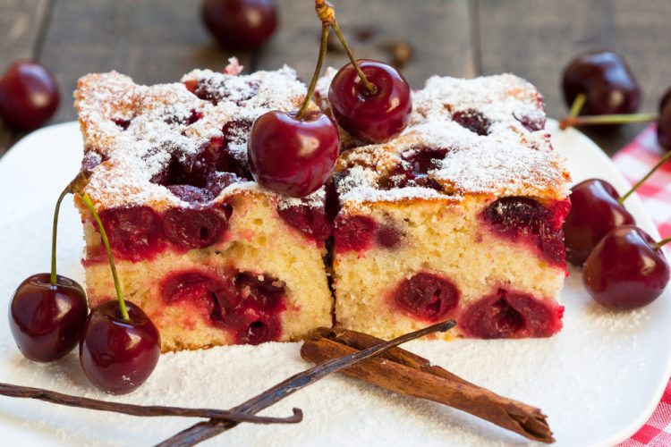

Kolac sa visnjama

Preukusni recept za kolac sa visnjama, pravio sam ga mnogo puta i nikada nije razocarao.
Recept sam pronasao na internetu ali sam ga vremenom prilagodio svom ukusu i ukusu mojih ukucana.
Sastojci
- 5 Belanaca
- 5 Zumanaca
- Ulje 170g
- Jogurt 200g
- Prasak za pecivo 1/2 kesice
- Secer 300g
- Visnje 400g
- Vanilin secer 1
Nacin pripreme
- Umuti 5 belanaca
- Umuti 5 zumanaca sa secerom i vanilin secerom
- U zumanaca ide ulje, jogurt, prasak za pecivo i brasno
- Na kraju pomesaj sa belancima i mesaj lagano